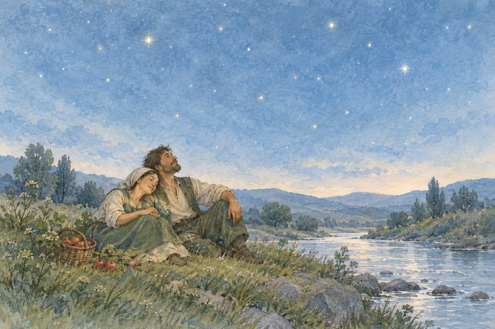

Truditorii
Când văd că viața trece în galop
Și nu ai timp să-ntorci privirea
Când să te-avânți te-oprești la stop
Și-anevoioasă ți-e din nou pornirea.
Ai planuri cât cuprinde lumea
Și-aduni și-mparți și înmulțești
Cu scopul să-ți sporești averea
Chiar de n-apuci s-o folosești.
Atunci mă-ntreb și pentru ce
Nevoia-i să te zbați!?
Nu ești decât un prunc
Luptându-te cu elefanți!
Nici nu apuci să te trezești
Să zic cumva la viață
Și-ncet, încet, îmbătrânești
Topindu-te cum bobul cel de gheață.
Mai fericiți erau strămoșii
Care umblau cu frunza-n brâu
Nu aveau stresuri sau emoții
Curgeau cu viața întocmai unui râu.
Cu cerul se acopereau
Luând lumina de la stele
Iar bogăția, fericirea, o aveau
Din rodul dărniciei pământene!
Vasile Groza